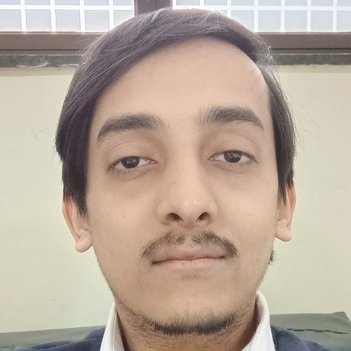

About Me

I am a PhD scholar in the Department of Computer Science and Engineering at IIT Delhi, working in theoretical computer science. My interests broadly encompass computational complexity and algebraic complexity, with a particular interest in computation over the reals and the complexity of algebraic and numerical problems. I am currently exploring research directions involving the BSS (Blum–Shub–Smale) model, arithmetic circuits, the Existential Theory of Reals (ETR), and related areas of complexity theory. I hold an MSc in Computer Science from Banaras Hindu University.
Advised by Prof. Nikhil Balaji, Department of Computer Science and Engineering, IIT Delhi.
Research Interests
- Computational Complexity Theory
- Algebraic Complexity and Computation over the Reals
- BSS (Blum–Shub–Smale) Model of Computation
- Arithmetic Circuits and Algebraic Computation
- Existential Theory of the Reals (ETR)
Publications
No publications yet. I am currently working on research problems in computational and algebraic complexity.
Contact
Email:
csz248491@cse.iitd.ac.in
LinkedIn:
LinkedIn Profile